funbiogeo contains many plotting functions. They have
multiple goals: (1) propose good default plots to inspect and represent
your data, (2) provide easy plotting methods for complex objects
(automatically display maps from spatial objects), and (3) provide
plotting methods for computed functional diversity metrics in other
packages. This vignette explains in detail all plotting functions
available in funbiogeo, how to use them and how to
interpret them.
Some of these plotting functions use different data inputs and some of them can deal with species categorization, i.e. displaying information by each category of species (family, order, endemism status, etc.). We detail the standard needed inputs in the table below, the “Additional input” column represents needed input that are not the other standard tables specified by the other columns.
| Function name | Site x species | Species x traits | Site x locations | Species category | Additional input |
|---|---|---|---|---|---|
fb_plot_distribution_site_trait_coverage() |
✅ | ✅ | ❌ | ❌ | ❌ |
fb_plot_number_sites_by_species() |
✅ | ❌ | ❌ | ❌ | ❌ |
fb_plot_number_species_by_trait() |
❌ | ✅ | ❌ | ✅ | ❌ |
fb_plot_number_traits_by_species() |
❌ | ✅ | ❌ | ✅ | ❌ |
fb_plot_site_environment() |
❌ | ❌ | ✅ | ❌ | ✅ |
fb_plot_site_traits_completeness() |
✅ | ✅ | ❌ | ✅ | ❌ |
fb_plot_species_traits_completeness() |
❌ | ✅ | ❌ | ✅ | ❌ |
fb_plot_trait_combination_frequencies() |
❌ | ✅ | ❌ | ✅ | ❌ |
fb_plot_trait_correlation() |
❌ | ✅ | ❌ | ✅ | ❌ |
fb_map_raster() |
❌ | ❌ | ❌ | ❌ | ✅ |
fb_map_site_data() |
❌ | ❌ | ✅ | ❌ | ✅ |
fb_map_site_traits_completeness() |
✅ | ✅ | ✅ | ❌ | ❌ |
Let’s first load the package and example datasets included in the
funbiogeo.
library("funbiogeo")
library("sf")
#> Linking to GEOS 3.10.2, GDAL 3.4.1, PROJ 8.2.1; sf_use_s2() is TRUE
data("site_locations")
data("site_species")
data("species_traits")Naming Convention
Like in the rest of the funbiogeo package, the functions
are named following certain conventions. For one, to avoid any collision
with other packages all the functions are prefixed with
fb_. Second all plotting functions begin with either
fb_plot_*(), when they are regular plots, or
fb_map_*() when they plot maps.
The function names in funbiogeo are generally long to be
as specific and clear as possible. So in case of doubt re-read the
function name, and what it should represent should be clear from the
name.
Regular Plots
In this section we will describe what we call “regular plots”, i.e.
plots of non-spatial objects (density plots, bivariate plots, lollipop
charts, heatmaps, etc.). We made this distinction because maps have
their own specific challenges. All the default regular plots proposed in
funbiogeo are quite specific to the data. In each of the
section below we’ll summarize what the plots is about, what are the
needed arguments, and how to interpret the output.
The function are all described in their specific subsections in alphabetical order.
Distribution of trait coverages across sites
Visualizing the trait coverage of all sites can help isolate which traits may show consistently low coverage. Also this can help notice if some groups of sites have higher coverage for certain traits than for others.
You can plot this using the
fb_plot_distribution_site_trait_coverage() function. It
takes two arguments: site_species the site by species
data.frame and species_traits the species by
traits data.frame. Note that internally the function uses
ggridges
to plot the distributions. This package is thus needed to run this
function.
Example:
fb_plot_distribution_site_trait_coverage(site_species, species_traits)
#> Loading required namespace: ggridges
#> Picking joint bandwidth of 0.00988We see the distribution of species coverage per site (along the
x-axis) for each trait (along the y-axis) and with all traits taken
together (shown at the top of the top on the line
all_traits). The proportions on the y-axis labels are the
average coverage observed for this trait. So for example, considering
only adult body mass as a trait would mean that we would achieve an
average coverage of 95.3%, meaning that on average across all sites
95.3% of species are covered. We can compare this to the trait
max_longevity which corresponds to the maximum longevity of the
species. We see that the average trait coverage across all sites is
82.1%. We see that the distribution however is rather wide, with some
sites showing a coverage of around 90% (the large bump), while some
sites are close to 62% coverage.
This plot considers the distribution of species across sites instead
of focusing only on the species by traits data.frame. This
maybe useful to realize, for example, that the traits of a species
occurring very rarely are missing this wouldn’t necessarily translate in
low site-level trait coverage.
Plotting the number of sites by species
The function fb_plot_number_sites_by_species() allows to
explore the site by species data.frame. It shows the number
(and proportion) of sites occupied by each species. Its first argument
site_species, the site by species data.frame
is necessary while the second one
threshold_sites_proportion, a target proportion of sites
coverage, is optional.
fb_plot_number_sites_by_species(site_species)
#> There are more than 30 species, the y-axis will label the position of 30 evenly spaced species (along their prevalence)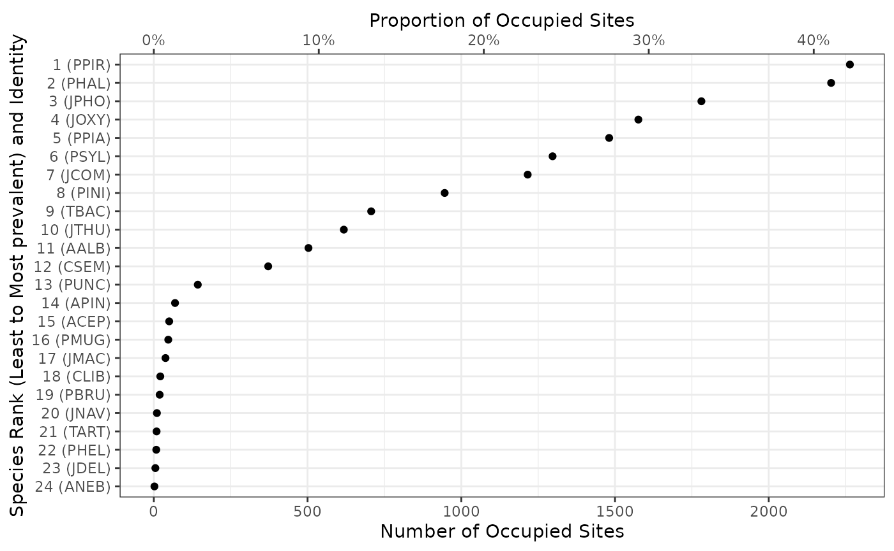
The function outputs a dotchart. The number of occupied sites per species is indicated at the bottom x-axis, while the top x-axis represents the proportion of occupied sites. The left y-axis label species names (in parenthesis) and their rank by increasing prevalence. Note that for readability constraints, only a limited number of species are labeled on the y-axis, but they are all displayed as dots on the plot.
Adding the second argument threshold_sites_proportion
displays a vertical bar at the target proportion of sites to see how
many species occupy more or less than the given proportion of sites.
Let’s say we want to see the species present in at least 40% of the sites:
fb_plot_number_sites_by_species(site_species, threshold_sites_proportion = 0.4)
#> There are more than 30 species, the y-axis will label the position of 30 evenly spaced species (along their prevalence)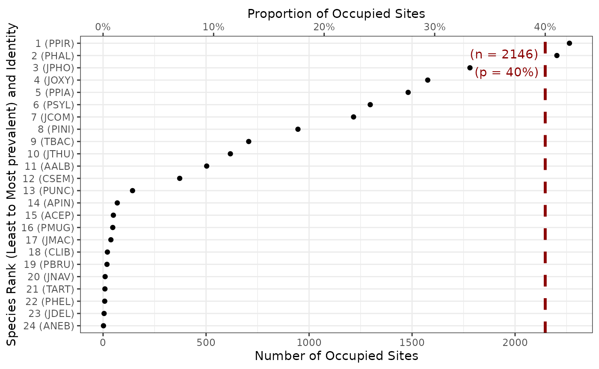
The threshold bar helps us get a sense of how many species are present in at least 40% of the sites. It also displays the corresponding number of sites.
Plotting the number of species per trait
One way to look at the species by traits data.frame is
to look at number of species with non-missing trait values for each
trait. The fb_plot_number_species_by_trait() function does
exactly that. Its first argument species_traits, the
species by traits data.frame, is necessary while the second
one threshold_species_proportion, a target proportion of
species coverage, is optional.
fb_plot_number_species_by_trait(species_traits)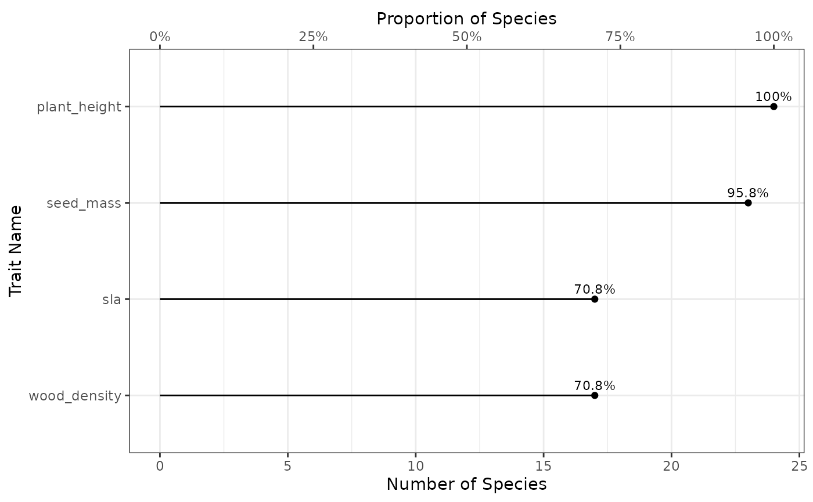
The function outputs a lollipop chart. On the bottom x-axis there is
the number of species covered by the given trait (the top x-axis
represents the proportion of species, which is directly proportional).
The y-axis represents each trait. The dot represents the actual coverage
observed with the corresponding proportion of species written on top.
With this figure we see that 82.6% of the species have a non-missing
adult body mass in the species by trait data.frame, while
only 54.4% have a non-missing maximum longevity.
Adding the second argument threshold_species_proportion
displays a vertical bar at the target proportion to easily target traits
covering a certain proportion of species. Let’s say we want to see
traits available for at least 70% of the species:
fb_plot_number_species_by_trait(species_traits, threshold_species_proportion = 0.7)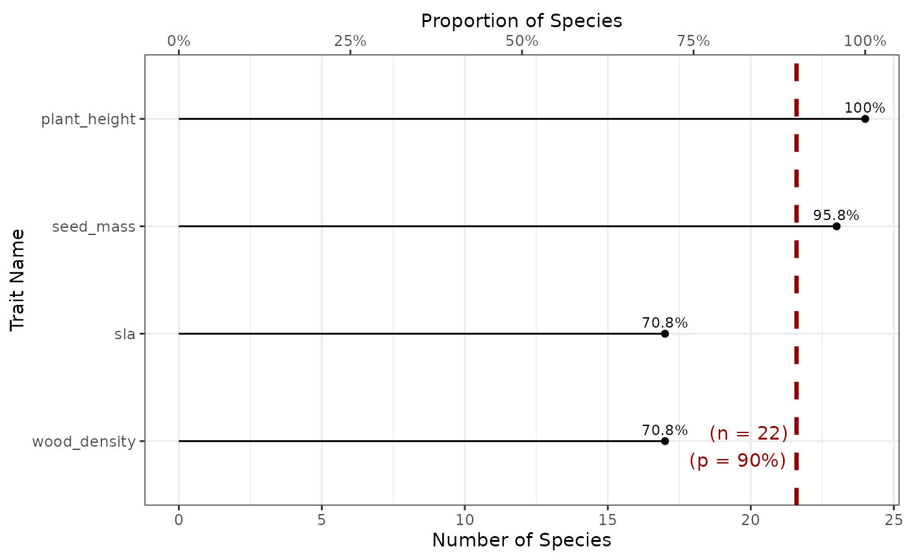
The red dashed vertical line shows the corresponding species coverage with labels indicating the proportion and corresponding number of species (n = 104).
Plotting the number of traits per species
You can also display the number of traits available per species. Showing it for each species would be quite difficult to read, so we decided instead to represent the number of species having given number of known traits. Also, because most trait ecologists are interested in multiple traits, we considered nested proportions of traits: considering the number of species covered by at least one trait, at least two, etc.
To represent such a plot you can use the function
fb_plot_number_traits_by_species(), it uses two arguments.
The first species_traits is the species by traits
data.frame. The second argument is
threshold_species_proportion which is optional and
corresponds to a certain threshold proportion of species, so that a line
can be added to the plot.
Using it on the included dataset gives:
fb_plot_number_traits_by_species(species_traits)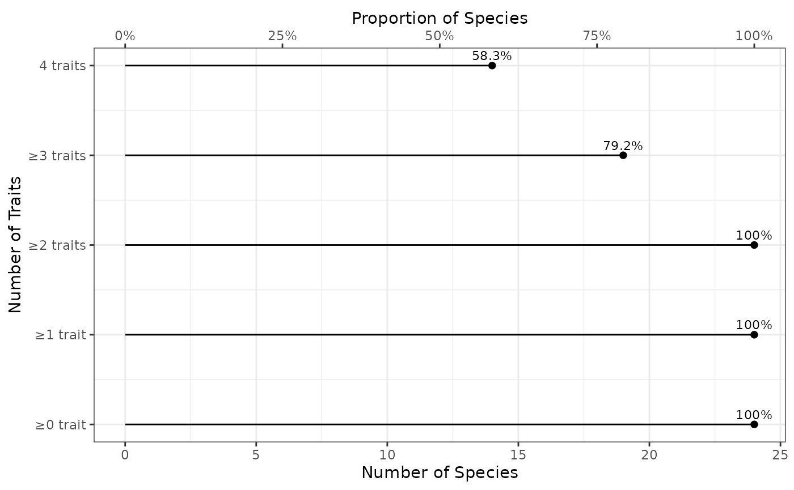
The x-axis represents the number of species concerned (bottom x-axis displays the actual number of species, while top x-axis displays the corresponding proportion of species). The y-axis shows the number of each traits. Note that the categories are nested: the set of species with at least 1 trait contains the set of species with at least 2 traits, and so on and so forth. By definition all species have 0 or more known traits, but we show that in the plot as a reference to see how the proportion decreases with increasing number of traits. The proportion is shown as text above each dot representing it. So for example, there are 62.4% species with at least 4 traits.
This plot does not tell us if all species with at least 4 traits share the same trait combination (there are multiple 4 trait combinations), but it’s a first indication.
Let’s say we’re interested in combinations of traits with at least 50% species covered. We can use the second argument to show it:
fb_plot_number_traits_by_species(species_traits, threshold_species_proportion = 0.5)Adding this argument displays a vertical bar at the target proportion of species to easily target number of traits covering a certain proportion of species. The red dashed vertical line shows the corresponding species coverage with labels indicating the proportion and corresponding number of species (n = 74).
Plotting environmental position of sites
To see if our sites are biased environmentally it can be nice to
locate them along environmental variables compared to a full region. For
the sake of simplicity we can focus on two variables against which to
compare our sites to a region. That is what the
fb_plot_site_environment() function does. It has four
arguments: the first one, site_locations, provides the
locations of sites as an sf object,
environment_raster is a terra
raster object, the next two arguments are first_layer and
second_layer which are the names of the two variables to be
extracted from environment_raster to make our plot.
From the included dataset we can represent the first 6 sites along total annual precipitation and mean annual temperature over the full region:
# Create the environmental rasters
prec <- system.file("extdata", "annual_tot_prec.tif", package = "funbiogeo")
tavg <- system.file("extdata", "annual_mean_temp.tif", package = "funbiogeo")
layers <- terra::rast(c(tavg, prec))
# Make plot (show environmental position of 6 first sites)
fb_plot_site_environment(head(site_locations), layers)
#> Warning: Removed 49503 rows containing missing values (`geom_point()`).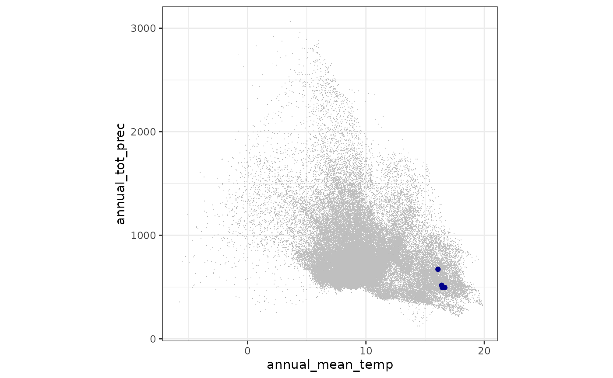
The plot shows the first selected layer as the x-axis and the second one as the y-axis. The environmental position of the sites are displayed using the big blue dots, while the light gray pixels are all the environmental variables extracted from the provided environmental raster.
This figure can show us that the first six sites are actually lower in temperature and higher in annual precipitation than most other places in our environmental rasters.
Plotting trait coverage for all sites
To select appropriate sites and traits, we can visualize the trait
coverage per site and per trait. This is exactly what is done by
fb_plot_site_traits_completeness() which takes
site_species, the site by species data.frame,
and species_traits, the species by traits
data.frame, as arguments.
We can use it with the included dataset as an example:
fb_plot_site_traits_completeness(site_species, species_traits)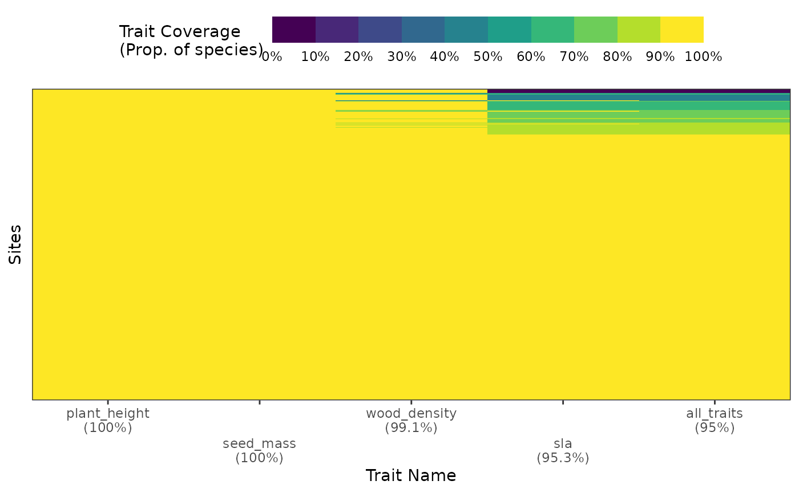
The plot shows the trait along the x-axis (and their average coverage
across all sites in their labels) and sites along the y-axis. Each thin
horizontal line represents a site. The color indicates the coverage for
the trait in each column. Note that for readability reasons the color
scale has been discretized from 0 to 100% coverage. Traits are ranked in
decreasing average coverage. The last column all_traits
contains the coverage for all traits taken together.
With this figure we can see that all sites have over 80% coverage with both adult body mass and litter size.
Plotting trait coverage per species
To select appropriate traits, we can visualize the trait coverage per
species. This is done by
fb_plot_species_traits_completeness() which takes
species_traits, the species by traits
data.frame, for sole argument.
We can use it with the included dataset as an example:
fb_plot_species_traits_completeness(species_traits)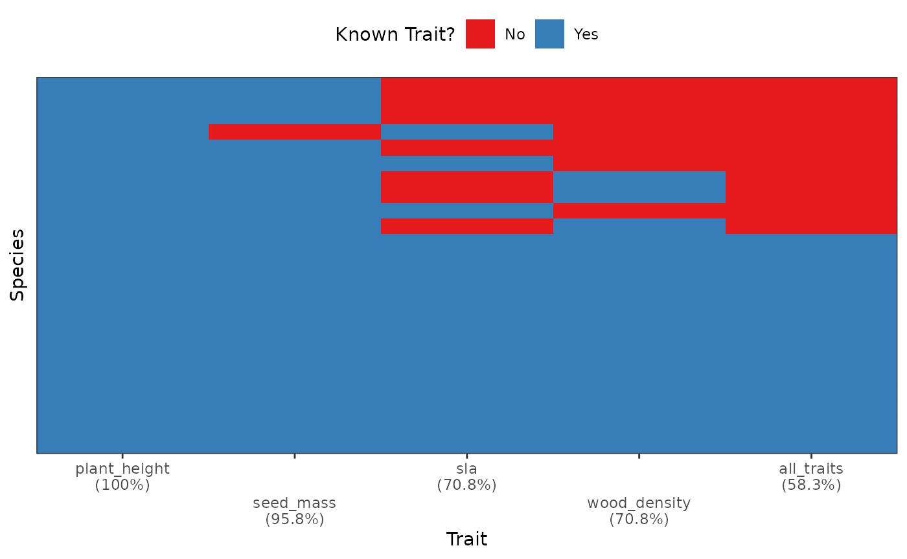
This figure visualizes directly the species by trait
data.frame. The x-axis displays the different traits,
ranked from left to right in decreasing coverage order (as indicated in
the x-axis labels). The last column all_traits considers
all traits taken together. The y-axis represents species in decreasing
coverage order from bottom to top. Each cell thus represents the trait
for a species: blue if the trait is known and red if it is missing.
From this plot we see that a significant proportion of species have missing traits and that even the most non-missing traits, adult body mass, is only known for 82.6% of the species.
Displaying traits combinations
Looking at the traits coverage for each species continuously maybe impractical or difficult. For example, when trying to display thousands of species or when the trait coverage varies widely across species. One way to reduce the size of the analyzed (and thus visualized) dataset is instead to count at which frequency appear the combinations of present/missing traits.
This is done by fb_plot_trait_combination_frequencies()
which takes two arguments: species_traits, the species by
traits data.frame, and order_by (equals to
either "number", the default option, or
"complete"), which influences the order of the plot (more
details below).
We can use it with the included dataset as an example:
fb_plot_trait_combination_frequencies(species_traits)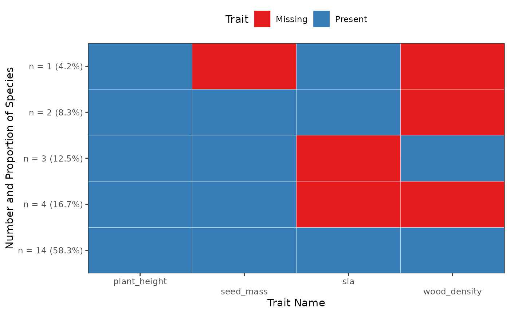
The x-axis represents individual traits ranked in alphabetical order from left to right. The y-axis represents different combinations. The labels on the y-axis show both the number and the frequency of each combination. When the cell is blue it means that the trait is present, when it is red it means the trait is missing. By default the combinations are ordered by increasing number from top to bottom, with the most numerous combinations of trait presences at the very bottom of the graph.
With this graph we can see that we have exactly 53 species (35.6% of the total number of species provided) have all their traits present, while 21 species (14.1%) have not a single trait in the dataset.
If we change order_by to "complete", the
combinations are ordered instead by the number of trait presents among
them:
fb_plot_trait_combination_frequencies(species_traits, order_by = "complete")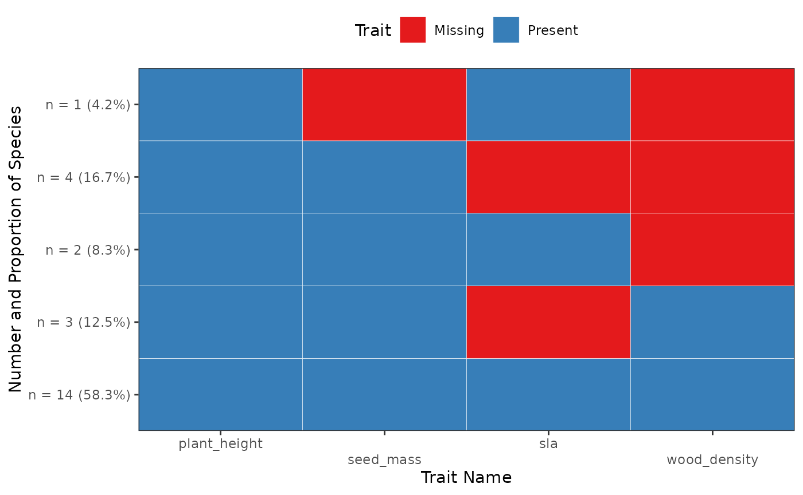
The most complete combinations are shown at the bottom, while the combinations with most missing traits are at the top.
Displaying traits correlations
Most of the plot functions in funbiogeo show traits
independently of one another. However, for functional biogeography
analyses, trait correlations maybe very relevant. This is exactly what
is done by fb_plot_trait_correlation(). It takes as first
needed argument species_traits, the species by traits
data.frame. The other arguments are optional and will be
passed to stats::cor().
Note that the function only works with numerical
traits and with complete observations. It
silently removes any species that has any NA.
With the included dataset as an example:
fb_plot_trait_correlation(species_traits)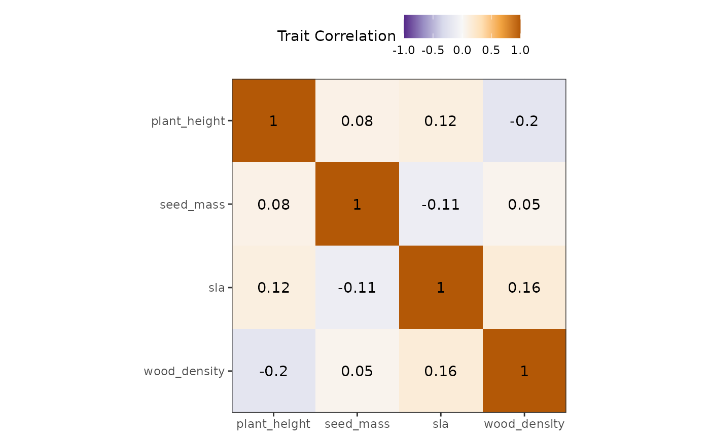
Both x- and y-axes represent the different traits. At their intersection are shown squared that are colored in function of their correlation coefficient (purple means close to -1 correlation while brown means close to 1, white means close to 0). The correlation coefficients are also displayed in the middle of this square.
With this visualization we can see that adult body mass and gestation length are quite highly correlated (cor = 0.7), while diet breadth is correlated with no other trait.
Maps
Map functions in funbiogeo are here to provide good
default visualization leveraging the spatial information of sites. We
know that producing map in R is challenging. That’s why we provide these
helper functions. Of course, these functions are all basics and you
either have to customize them by adding ggplot2 commands to
the returned plots, or to look at their code to produce similar plots in
the way you want.
For example, the functions do not display background maps because it would be too complex to accommodate for all use cases between quite localized sites up to global level analyses.
Note that all maps are always in the Coordinate Reference System of
the provided site_locations object. You can also tweak that
by adding a custom ggplot2::coord_sf() call.
Mapping traits coverage of sites
The function fb_map_site_traits_completeness() maps the
trait coverage (proportion of species, weighted by relative abundance if
relevant, with known trait values) of each site for all traits.
It takes three arguments: site_locations (spatial
locations of sites), site_species (site by species
data.frame), and species_traits (species by
traits data.frame).
If we use the included dataset in funbiogeo it
gives:
fb_map_site_traits_completeness(site_locations, site_species, species_traits)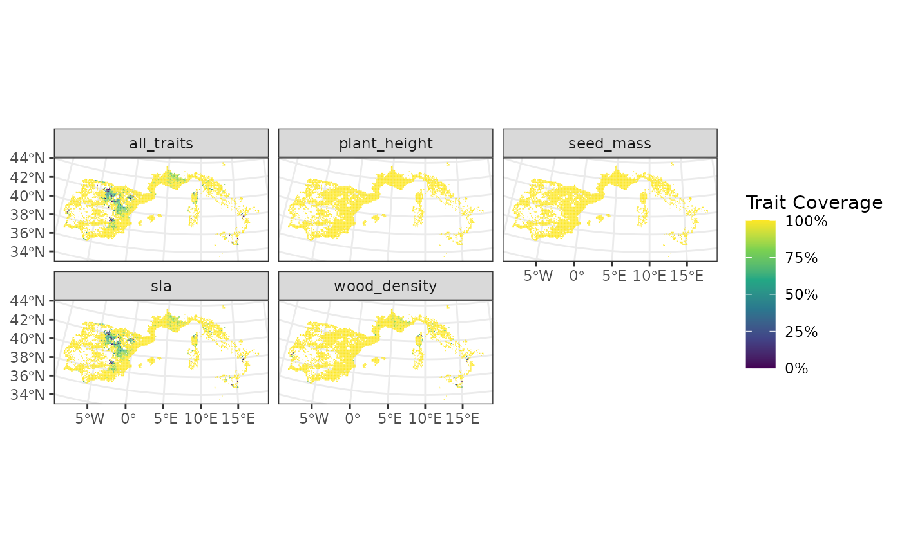
It displays maps of the sites, colored by their trait coverage. Each
facet represents a different trait while the all_traits
facet consider all traits together.
From this plot we can see that on average the South of Western Europe is less covered by traits than the North of Western Europe. It may be an indication of higher species richness in the South compared to the North which makes achieving high coverages more difficult. Furthermore, we can see that a site in the Netherlands has 0% coverage of diet breadth. This is most likely the sign of sign of low species richness with an absence of diet breadth for those species.
Mapping arbitrary site data
To be the most flexible possible, funbiogeo provides a
function to map arbitrary site data whether quantitative or qualitative
with the fb_map_site_data() function. The first argument it
takes is site_locations, the spatial locations of sites as
an sf object, the second argument is site_data
which is a data.frame containing a "site"
column and data in additional columns, the third and last required
argument is selected_col which should be the name of the
column provided in the site_data data.frame
that is going to be used as a variable to display. All three arguments
are required.
For example, if we want to get a map of species richness of the included dataset we can do the following:
# Compute Species Richness
site_rich <- fb_count_species_by_site(site_species)
# Map of Species Richness
fb_map_site_data(site_locations, site_rich, "n_species")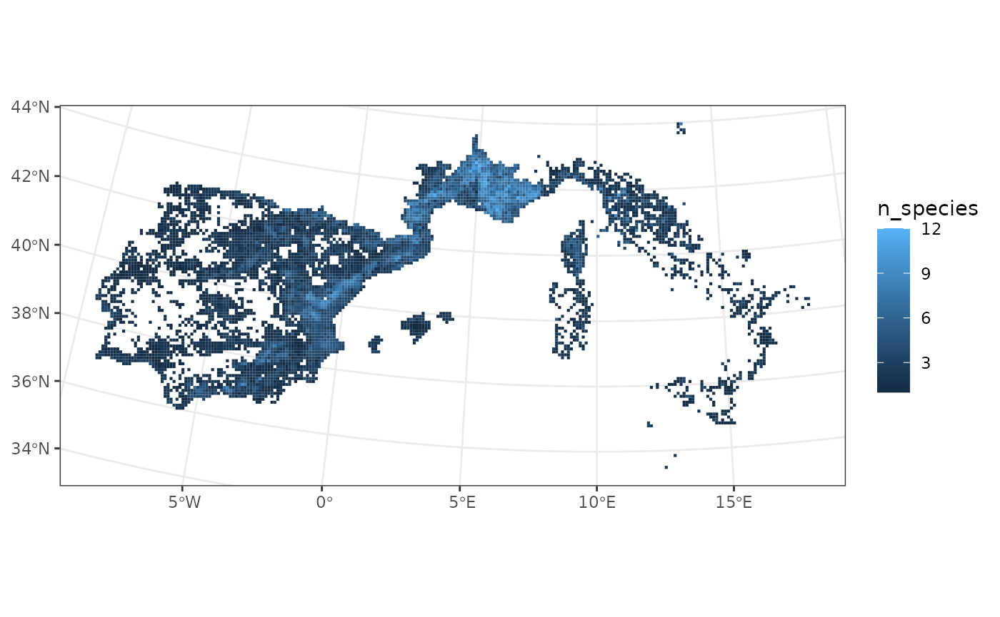
From this map, we can for example see that the Northern part of our dataset is less species-rich than the center or the South.
Now imagine we want to display the category of sites which be “Testing” or “Training”, depending on which set they belong to. We can use the following to display the map:
# Generate categories
site_cat <- data.frame(
site = site_species$site,
set = sample(c("Testing", "Training"), nrow(site_species), replace = TRUE)
)
# Display them
fb_map_site_data(site_locations, site_cat, "set")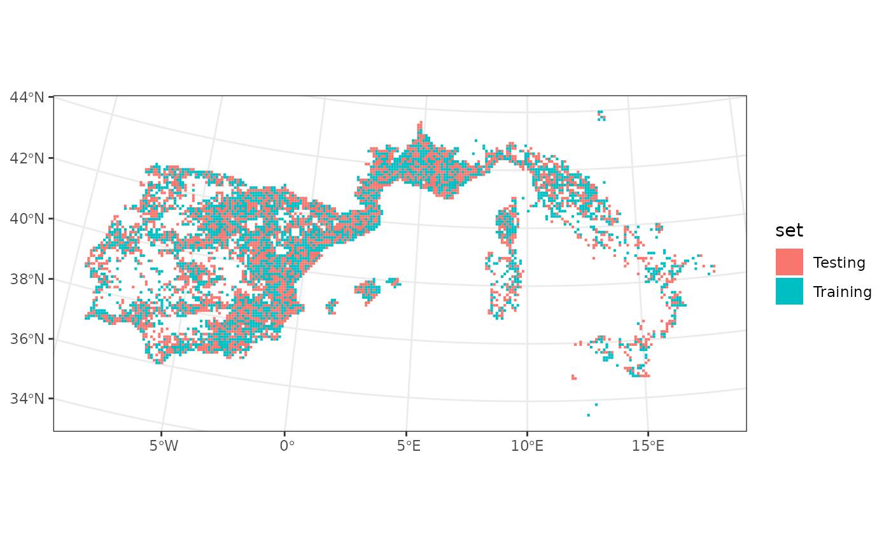
Mapping site rasters
Mapping rasters can be quite cumbersome with R.
funbiogeo provides a generic function to map them with
fb_map_raster(). It only needs as first argument a
terra SpatRaster object. It can be very useful
when visualizing environmental layers for example. The function will
display the raster in the provided projection.
For example:
# Getting the raster
tavg <- system.file("extdata", "annual_mean_temp.tif", package = "funbiogeo")
tavg <- terra::rast(tavg)
# Mapping the raster
fb_map_raster(tavg)